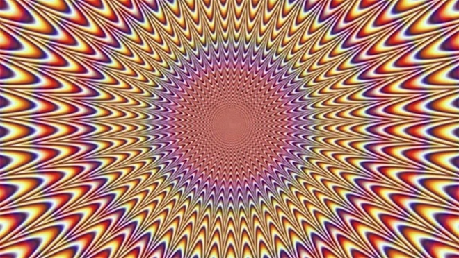
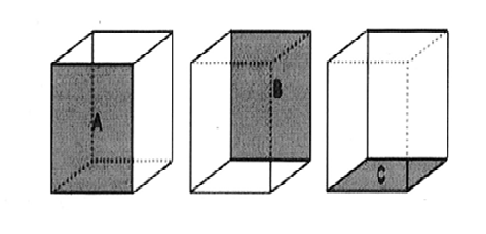
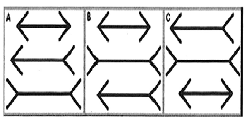

CAN WE BELIEVE OUR OWN EYES?
A. An optical illusion refers to a visually perceived image that is deceptive or misleading in that information transmitted from the eye to the brain is processed in a way that the related assumption or deduction does not represent the true physical reality. Our perceptions of what we think we see can be influenced by a number of external factors; ‘illusions’ can be classified into two main categories these being ‘physiological illusions’ and ‘cognitive’ illusions, the latter category can then be divided again into four sub-types.
B. Physiological illusions occur as a result of excessive stimulation of the eyes and brain which leads to a temporary state of confusion and mixed messages. For example, after exposure to extremely vivid lights, the eyes may need time to adapt and immediately after the stimulus, we may see things that would not be the norm. In the same way a contingent perceptual after-effect may be experienced after staring at a particular colour and the receptors in the brain may process subsequent colours inaccurately until overload has passed.
C. Cognitive illusions, on the other hand, are said to arise not as a result of neurone activity as with the aforementioned category, but due to assumptions we may consciously make based on our knowledge and experience of the world. The four categories of cognitive illusion are ‘ambiguous’ illusions, ‘distorting’ illusions ‘paradox’ illusions and ‘fictional’ illusions. Inclusion of ‘fictional’ illusions into the cognitive group is somewhat misleading; however, as this type of illusion is unique in that it is only seen by an individual in a given situation and exists in no tangible form. A fictional illusion is in reality a hallucination which arises as a result of drug use or a brain condition such as schizophrenia.
D. Ambiguous illusions are pictures or objects which are structured in such a way that alternative perceptions of their structure are possible. Different individuals may instantly perceive the object or picture in a different way than another and, in fact, the same individual is often able to see and interpret the image or object in more than one form. A classic example of an ambiguous illusion is the Necker cube. This cube is a standard line drawing which our visual senses generally interpret as a three dimensional box. Wien the lines of the box cross, the picture intentionally does not define which is in front and which is behind. However, when individuals view the box, it is the automatic response of the mind to interpret what is seen. Generally our thought process patterns work in the way that we view objects from above; for this reason, when most people look at the Necker Cube they will interpret the lower left face as being the front of the box, the base of the front face being parallel to the floor as their thought processes convert the image to three dimensions. However, it is also possible to interpret the image differently in that the front of the box could also be seen to be in a different position.
E. The Necker Cube made contributions to researchers’ understanding of the human visual system, providing evidence that the brain is a neural network with two distinct and interchangeable states. It has also been used in epistemology – the study of knowledge – as evidence to disprove the theory upheld by ‘direct realism’ that the way the human mind perceives the world is the way the world actually is. To illustrate, with the՜ Necker cube we are generally able to see one or both versions of a three dimensional cube, when in fact only a two dimensional drawing comprised of 12 lines exists.
F. Distorting illusions affect an individual’s ability to judge size, length, or curvature; the Muller-Lyer illusion which consists of three lines with arrow-like endings is a prime example. In this illusion the middle arrow has both arrow ends pointing out, while the line above it has arrow’ ends pointing in and the third and final line possesses one inward pointing and one outward pointing arrow’ end. ¿Most respondents from certain backgrounds generally respond that the middle arrow is the longest (though all are in fact the same). However, cultural backgrounds affect perceptions related to this illusion; international research having shown that non-Western subjects, particularly those generally not exposed to rectangular shaped buildings and door frames in their day to day life, are less likely to misinterpret the true length of the three drawings.
G. Paradox illusions encourage the mind to believe that we are seeing something we know to be impossible. The Penrose Stairs and the Penrose Triangle, developed by Lionel Penrose are examples of models created to illustrate this phenomenon. Many naturally occurring optical illusions also exist. Throughout the world there a number of locations where objects can be perceived to roll uphill; our cognitive and pre-learned knowledge inform us that this is impossible; however information received by the visual senses of observers creates conflict. These areas are often known as ‘gravity hills or ‘magnetic’ hills and are often popular with tourists; the mystical properties of the area often promoted vigorously to add mystique or claimed to arise as a result of the special properties and magnetic influence of the area’s land.
H. The scientific explanation for such phenomenon is that such areas are set on slightly sloping ground without a visible horizon against which to establish perspective. In addition, surrounding points of reference we would generally expect to be perpendicular, such as trees, are in fact on a slope. The interpretation of what observers believe they are experiencing is therefore confused, downward slopes may be perceived to be horizontal or tilting upwards and cars with hand brakes released on such ground appear to roll upwards when in fact they a rolling, as gravity dictates, in a downhill direction. While our innate sense of balance under normal situations helps us determine the inclination of the ground, interference from the visual stimuli as outlined above and lack of reference from points on the horizon can override this ability in such situations, especially if the gradient is gentle.
Questions 1-3
Answer the questions below.
Choose NO MORE THAN THREE WORDS from the passage for each answer.
Write your answers in boxes 1-3 on your answer sheet.
1 What type of illusion is a result of interference with neurone activity?
2 Which two factors influence the way we process information on a cognitive level?
3 Which theory holds that individuals see only the true reality of a situation?
Questions 4-8
According to the information in Reading Passage, classify the following as relating to
A. Fictional illusions
B. Paradox illusions
C. Distorting illusions
D. Ambiguous illusions
Write the correct letter A-D in boxes 4-8 on your answer sheet.
4 may be perceived differently by individuals of diverse ethnic origin
5 may override our natural ability to make rational judgement
6 may be interpreted differently even by the same subject
7 may result due to chemical stimulation
8 has been used to question the validity of arguments in a different field
Questions 9-13
Choose the correct letter, A, B, C or D.
Write your answers in boxes 21-25 on your answer sheet.
9. Fictional illusions
A may eventually lead to schizophrenia.
B are the only type which are completely subjective.
C are very similar to paradox illusions.
D are typical of cognitive illusions.
10. According to ambiguous illusion theory, which face of the Necker Cube is interpreted to be the front of the box due to the general tendency to view objects from above?

A
B
C

11. Which diagram represents the Muller-Lyer illusion?


A
B
C
12. The Penrose Stairs are an example of a model which
A can persuade the viewer they are seeing something infeasible.
B has disproven established theories on knowledge.
C is a naturally occurring paradox illusion.
D can be seen in a number of international locations.
13. Occurrences on ‘gravity’ or ‘magnetic’ hills result due to
A the mineral content of soil in the area.
B factors currently unexplained from a scientific perspective.
C misleading natural points of reference.
D rising slopes being misinterpreted as on a decline.
---End of the Test---
Please Submit to view your score, solution and explanations.